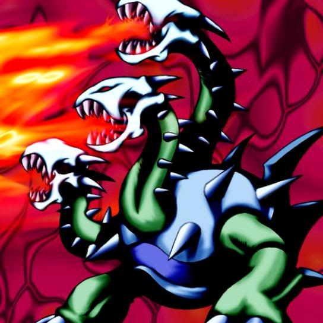

Yamadron

Description: "Transforms surrounding spaces into NORMAL terrain when engaged in battle. Transforms surrounding spaces into NORMAL terrain when this card is flipped face-up."
STATS
ATK: 1600
DEF: 1800DECK COST
Deck Cost per Card: 39EFFECT IS IMPLEMENTED!
Fusion List (4 Possible Fusions)
- Yamadron + Catapult Turtle = Kairyu-Shin
- Yamadron + Harpie Lady = Harpie's Pet Dragon
- Yamadron + Laughing Flower = B. Dragon Jungle King
- Yamadron + Time Wizard = Thousand Dragon